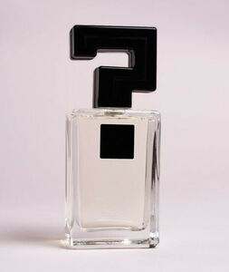

Trade Mark Journal No.2025/029 18 July 2025
WO0000001861855 (3,21)
Office of origin: France
Date of International Registration:1 April 2025
Date of designation in the UK:
1 April 2025

International priority date claimed: 7 October 2024
(France)
(5088376)
- Class 3
- Soaps; perfumery products; essential oils; cosmetics; hair lotions; dentifrices; depilatories; make-up removing products; lipstick; beauty serums and masks for the face, body and hair; shaving products; incense; deodorants for personal use [perfumery]; cosmetic preparations for slimming; cosmetic preparations for toning purposes; air fragrances; potpourris [fragrances]; body deodorants; household maintenance products; scented waters.
- Class 21
- Containers in the form of diffusers for air fresheners or for diffusing perfumes; dispensers for air fresheners via capillarity; diffusers of room fragrances by absorbent material; drinking bottles for sports, tableware, table plates, saucers, bowls, candy boxes, bottles, decanters, non-electric heaters for feeding bottles, egg cups, coupes [bowls], jars, glasses, fitted picnic baskets [including dishes], valet trays [receptacles for small objects] for household use, dishes, pots, napkin rings; table mats, earthenware, figurines of porcelain, ceramic, of earthenware, terracotta or glass, statuettes of porcelain, ceramic, of earthenware, terracotta or glass, glasses, tumblers, mugs, cups, toilet cases, toilet brushes, combs, diaper pails, decorative glass spheres, flower-pot covers, not of paper, ornaments of porcelain; bottles and drinking vessels; glassware; porcelain ware; containers for household or kitchen use; ornaments of porcelain; figurines of porcelain, ceramic, earthenware, terracotta or glass; pottery; shoe trees and boot and shoe brushes; cosmetic cleaning instruments; glove stretchers; make-up removing apparatus; combs and comb cases; brushes for personal use; make-up brushes; powder compacts; powder puffs; cosmetic utensils; oscillating brushes for skin care; portable utensils, sticks and spatulas for applying care or make-up products; deodorizing apparatus for personal use; perfume vaporizers; glass bottle stoppers; fitted toiletry bags being toilet cases; fitted toiletry bags; eyebrow brushes; shaving brush holders; shaving brushes; shoe horns; soap boxes; soap, perfume and cosmetics dispensers; toilet sponges; toilet utensils.
TRADE CONNECTION
Representative: Monsieur SOUTOUL FRANCK INLEX MEA, 40 rue du Louvre,, INLEX MEA, F-75001 PARIS, FRANCE